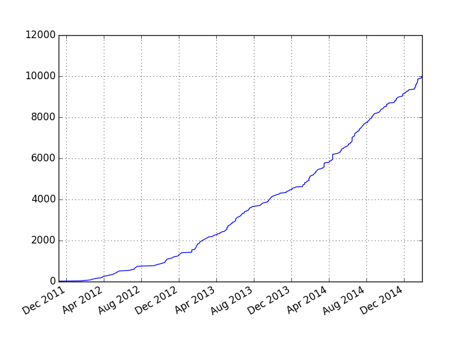

Announcing 2015 Steering Committee
The election for the Software Carpentry Foundation's Steering Committee is now complete. 122 ballots were exercised out of 179 mailed out, and our new committee is:
Matt Davis

Adina Howe
Katy Huff

Karin Lagesen
Aleksandra Pawlik
Raniere Silva
Jason Williams
We are very grateful to the other candidates in the election for standing, and look forward to continuing to work closely with them in the future:
| John Blischak | Jonah Duckles | Tim Cerino | Ivan Gonzalez | Sheldon McKay | Jeramia Ory |
The incoming Steering Committee will meet with their outgoing counterparts this week to start getting up to speed on governance, finance, partnerships, and plans for the coming year. We will announce their roles (such as chair and treasurer) as soon as they have been decided. Our thanks to the members of the outgoing committee for all their contributions:
| Jenny Bryan | Neil Chue Hong | Carole Goble | Josh Greenberg | Katy Huff | Damien Irving |
| Adam Stone | Tracy Teal | Kaitlin Thaney |
And by sheer coincidence, on the same day that our new Steering Committee was elected, we taught our 10,000th learner:

so our biggest thanks to out to the instructors, partners, and helpers who have given so much to so many.